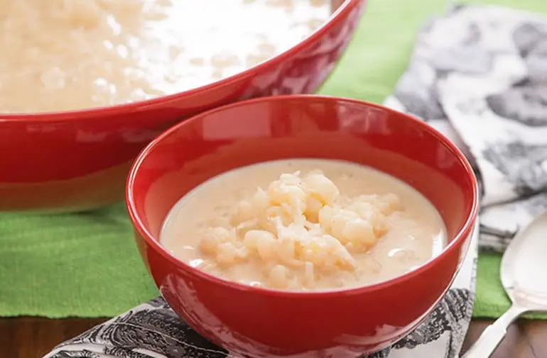

Como fazer uma canjica bem doce para a família
Canjica Tradicional
1 hora e 30 minutos de preparo
15 porções
Lista de ingredientes:
- 2 xícaras (chá) de Canjica de milho Yoki
- 2 litros de água
- 1 xícara (chá) de açúcar
- 1 lito de leite
- 100g de coco ralado
- Um pou do Cravo-da-Índia e Canela-da-China em Casca Kitano a gosto
- 1 lata de leite condensado
- 1 lata de creme de leite
Modo de preparo:
- Deixe a canjica na água por 24 horas.
- Transfira a receita de canjica cremosa para um apanela de pressão com água.
- Adicione o cravo e a canela e cozinhe sua canjica de milho por 45 minutos
- Acrescente o açúcar, o leite, o leite condensado eo coco. Com a panela destampada, cozinhe até engrossar a canjica de milho.
- Desligue o fogo e acrescente o creme de leite. Misture e sirva sua canjica doce.
- Pronto, agora você já sabe como fazer uma canjica doce!